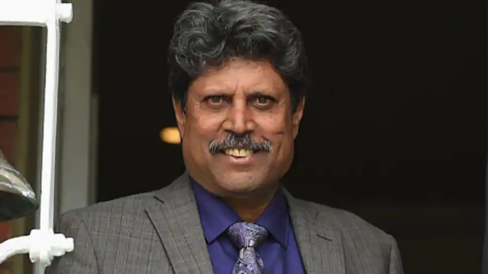

Kapil Dev
Indian Former Cricketer
When you have to work, work with a Smile..!!
Kapil Dev Ramlal Nikhanj (born 6 January 1959) is an Indian former cricketer. He was a fast-medium bowler and a hard-hitting middle-order batsman, and was named by Wisden as the Indian Cricketer of the Century in 2002. Dev captained the Indian cricket team that won the 1983 Cricket World Cup, and in the process became the first Indian captain to win the Cricket World Cup, and is still the youngest captain (at the age of 24) to win the World Cup for any team. He retired in 1994, at the times of holding the world record for the highest number of wickets taken in Test cricket, a record subsequently broken by Courtney Walsh in 2000.
Biographies
- Kapil: Autobiography of Kapil Dev
- God's Decree in 1985
- Cricket My Style in 1987
- Straight From The Heart in 2004